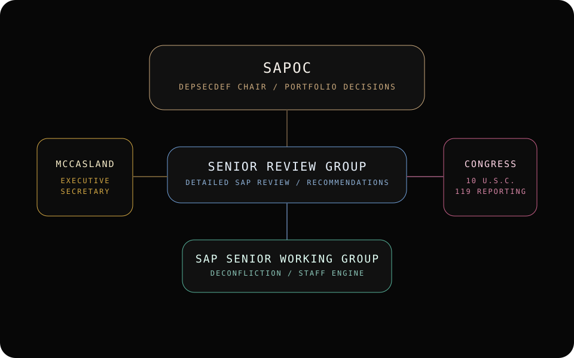
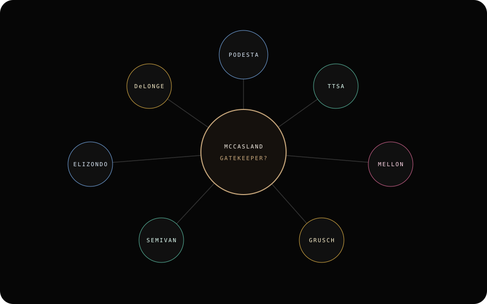
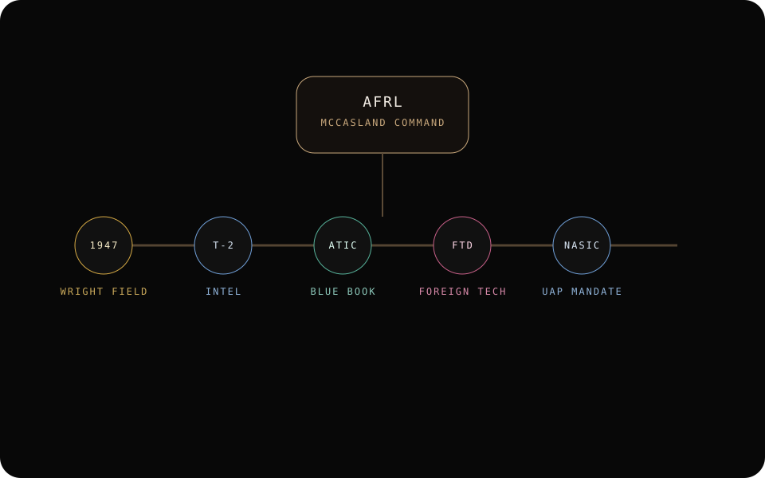
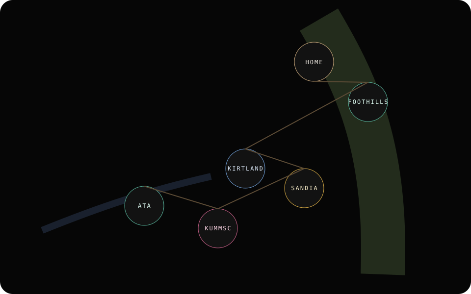
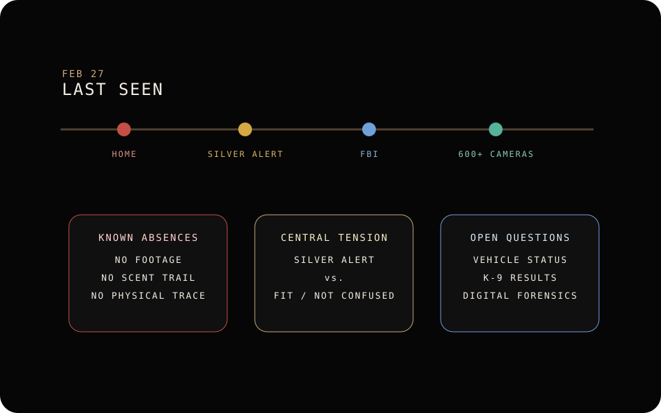
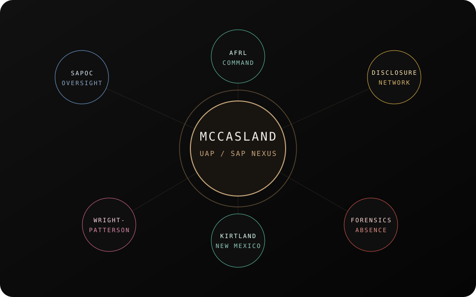

The fastest way into the case
The prior dossier contained everything, but it asked readers to hold too many threads in their head at once. This overview collapses the research into four orienting answers before sending readers down focused routes.
Who was McCasland?
A retired Air Force major general whose career ran through the Office of Special Projects, Buckley's aerospace data facility, the Navstar GPS program, the Space Based Laser project, the Phillips Research Site at Kirtland, SAPOC in the Pentagon, and finally AFRL at Wright-Patterson.
Why does SAPOC matter?
As Executive Secretary of SAPOC and head of the DoD SAPCO staff engine, he sat at the point where special-access portfolio reviews, congressional notifications, access records, and annual revalidation cycles converged.
Why does the UAP thread matter?
Tom DeLonge's 2016 Podesta emails cast McCasland as a quiet but central facilitator who understood the UAP subject, helped assemble advisors, and bridged public disclosure efforts to deeply classified institutions.
Why is the disappearance different?
The forensics alone are unusual. The interest escalates because the missing person is not a generic retiree but someone whose knowledge footprint still carries national-security weight, regardless of whether the disappearance is mundane or extraordinary.
The convergence map
The research becomes manageable when treated as six converging systems instead of one giant wall of text. Click the nodes to see why each system matters and where to keep reading.
The site is built around this framing: a documented career path at the center, surrounded by the institutional and interpretive systems that make the disappearance consequential.
Why McCasland is the anchor
Before any UAP interpretation, the underlying career is unusual on its own: special-projects space programs, GPS, directed-energy weapons, SAP oversight, AFRL command, and post-retirement work in advanced tracking and directed-energy technology.
- Office of Special Projects and Buckley roles tie him to classified reconnaissance pipelines.
- SAPOC and DoD SAPCO roles put him near the administrative apex of special-access oversight.
- AFRL command linked him to the Air Force's premier science and technology enterprise.
- Albuquerque residency and ATA/BlueHalo work kept him inside the same ecosystem after retirement.
SAPOC is the strongest documented lever in the whole story
The key value of the SAP route is not sensationalism. It is that McCasland occupied a role where annual revalidation, congressional reporting, access records, and cross-category special access oversight all passed through the same staff engine.
- Read this route first if you care about what he could plausibly have known.
- It also frames the difference between documented oversight and the claim that some programs may evade it.
AFRL gives the story institutional weight
McCasland did not merely serve in obscure programs. He later commanded AFRL itself, with authority over a global R&D portfolio and the directorates that sit closest to the Wright-Patterson and Kirtland questions.
The disclosure network is where the public record gets volatile
DeLonge's Podesta emails are the source of the strongest public claims: that McCasland was privately supportive, knew the subject, and helped assemble an advisory network. Those claims are not McCasland's own words, but they are why his name became central to disclosure lore.
The Wright-Patterson link is about lineage, not proof
The research route here is narrower than the folklore. Roswell material going to Wright Field is documented; direct continuity from 1947 laboratories to McCasland's AFRL command is institutionally traceable, but not a public proof of exotic-material custody.
Albuquerque is not just backdrop
Kirtland, Sandia, KUMMSC, the Starfire Optical Range, and ATA/BlueHalo create a dense local environment of nuclear storage, directed-energy research, space tracking, and advanced sensors. McCasland lived inside that geography for years.
The disappearance route is driven by missing data
Even without the UAP angle, the absence pattern is difficult to ignore: no footage from 600+ homes, no released K-9 result, no physical trace, no confirmed clothing description, and a Silver Alert whose statutory logic still clashes with public denials of confusion.
Choose the route that matches your question
Each page has a single job. Readers who want the institutional thesis can start there. Readers who want the disappearance mechanics or the disclosure network can branch accordingly without losing the larger frame.

UAP / SAP Nexus
The structural route: SAPOC, SAPCO, legal authorities, visibility limits, and why this role matters more than any rumor.
Open the oversight architecture
Disclosure Network
The public narrative route: Podesta emails, DeLonge, TTSA, downstream UAP figures, and the gatekeeper question.
Open the network map
Wright-Patterson Chain
The institutional-continuity route: Roswell shipping records, T-2, ATIC, FTD, NASIC, AFRL, and where the folklore outruns the record.
Trace the lineage
Kirtland / New Mexico Nexus
The geography route: Kirtland, Sandia, KUMMSC, Starfire, ATA, nuclear clustering, and why Albuquerque matters beyond scenery.
Open the geography map
Disappearance Forensics
The case mechanics route: timeline, Silver Alert contradiction, search-and-rescue gap, camera gap, and scenario testing.
Review the disappearance analysis
Legacy Archive
The untouched single-file dossier remains preserved for anyone who wants the full previous synthesis and appended source chapters exactly as built.
Open the preserved archiveSix career turns that define the case
Classified space entry point
Payload systems, the Office of Special Projects, MIT doctoral work, and a return to highly classified development units at Los Angeles AFB.
Mission planning, GPS, and space weapons
Buckley's aerospace data facility, the Navstar GPS joint office, and the Space Based Laser project move him from collection to strategic aerospace programs.
Kirtland embeds him in directed energy and space surveillance
As commander of the Phillips Research Site, he oversaw the exact New Mexico R&D ecosystem that later surrounds the disappearance geographically.
SAPOC becomes the pivotal assignment
Director of Special Programs in OUSD(AT&L), effectively serving as Executive Secretary of SAPOC and manager of the DoD SAPCO staff engine.
AFRL command ties oversight to Wright-Patterson
He commands the Air Force Research Laboratory, bringing SAP portfolio awareness into the institution most associated with foreign technology exploitation and UFO lore.
Albuquerque civilian phase and final disappearance
Technology leadership at ATA/BlueHalo, continued immersion in tracking and directed-energy systems, and then disappearance from Sandia Heights on February 27, 2026.
The questions still driving the investigation
Why did the Silver Alert criteria appear to fit?
The statute points toward irreversible cognitive decline, yet family and media-adjacent voices insist he was not confused or demented.
What did the dogs, cameras, and vehicles actually show?
The public record is still missing the K-9 results, vehicle status, and the difference between “no footage found” and “footage reviewed but unhelpful.”
How much weight should be put on the DeLonge emails?
They are the foundation of the public disclosure story around McCasland, but they are still DeLonge's claims to Podesta, not sworn statements from McCasland.
Was the federal response purely procedural?
FBI and Kirtland involvement can be explained by routine national-security interest, but the combination of silence and investigative restraint keeps speculation alive.
Nothing from the original build was discarded
The full single-scroll dossier is preserved intact
The earlier build remains available as an untouched archive snapshot. Readers who want the original mega-dossier can still access it, while the new site gives everyone a clearer path through the same research.